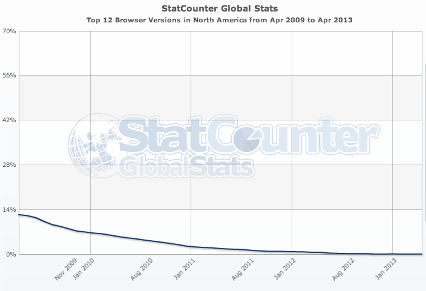

Title of Presentation
Or: How We Learned to Stop Worrying and Love Responsive Design
Craig Patik
Eric Steinborn
Typical Development

Typical Development

Lacks Collaboration

ITS Helped Us Collaborate

Put a bunch of smart people in a room to work this out.
How to Avoid Reinventing the Wheel?
Great question!
What is Great About the Web Right Now?
What will be great in the future?
Create Future-Friendly Websites
What device will you be unwrapping tomorrow?
What device will you be unwrapping two holidays from now?
In a Perfect World...

Pixel-Perfect Photoshop Comps

Pixel-Perfect Photoshop Comps

Typical Waterfall Approach
 Photo Credit: Dan Mall
Photo Credit: Dan Mall
Typical Waterfall Approach
“No battle plan survives contact with the enemy.”
Typical Waterfall Approach
 Photo Credit: Dan Mall
Photo Credit: Dan Mall
Proposed Schedule

Actual Schedule

The Web is a Series of Tubes Components
Let's create some reusable components.
But wait — let's not reinvent the wheel again.
Is There Anybody Out There?

Foundation 4

Foundation 4
Mobile First
Semantic Markup
Library of JS Plugins
“The most advanced responsive- Zurb (creators of Foundation)
front-end framework in the world.”
Responsive Grid
View Demo
Tabs to Accordion
View Demo
So We Started Making Stuff


Navigation
View Demo
Responsive Tables
View Demo
Gathered Everything in One Place
Featuring:
Introductory videos
All RWD resources we found
A showcase of components and techniques
and we called it...

“Create New York State sites and apps
that adapt to every device.”
“Thats all sounds terrific, but can you please explain how I could possibly use these super amazing, technologically advanced components on MY sites and apps?”
We Didn't Create It From Scratch
It's actually based on a new web framework.
The New Web Framework
Is Responsive
Is Modern
Is Whimsically Magically Magnificent
Built for NYS
(NYS collage pic)
Excelsior Is
A fully-documented,
platform, server and CMS agnostic,
cutting-edge, open-source web framework
Excelsior Features
Reusable and re-skinnable components and patterns
An easy entry point for beginners
Guts tough enough for advanced developers
It's Not Another Standard
Excelsior is yours
Use it how you want
Edit it until the cows come home.
Hosted Exclusively on Github

But wait, There's More!

Outdated Techniques and Processes
"Just throw it on the website"
Desktop-first design, separate mobile sites
Plain CSS
Manual file creation
50 stylesheets and JS files per page
Mismanaged source control
Emails and spreadsheets for bugs and changes
×
Outdated Techniques and Processes
YOU SHALL NOT PASS!
Modern Techniques and Processes
Content Based Design
Multi-Device & Mobile-First
Preprocessed CSS and Build tasks
Minified and Combined Assets
GitHub
GitHub Issues
...and we made it easy to use too!
Next-Gen Browsers and Devices
Fully functional in IE8+ and all major browser vendors
Chrome, Firefox, Opera, Safari
iPhone, Android 2+, WinPhone 7+
Non-major browsers still "work"
IE6 & IE7 will be served mobile layout or print styles
Some People Might be Thinking...

"My sites MUST look identical across all browsers and fully support IE6 AND IE7!"
We've got three things to say about that:
Do you REALLY?
1. IE 6 is Dead
IE 6 = 0.15%
Source: StatCounterIE 7 Isn't Far Behind

IE 7 = 0.74%
Source: StatCounterLook Close, You'll See Something

IE Usage 2009-2013
Source: StatCounterMobile is Winning

Mobile Usage 2009-2013
Source: StatCounter2. Shun the Future for the past?

3. Still Need To Support It?
The code isn't set in stone
You can add your own support

You're Going to Love It, Here's Why
It's So Easy
All you need to know is HTML & CSS
Fully documented components
In-depth wiki
RWD is Hard
It takes a lot of time
It's fundamentally different
RWD is a moving target
Don't reinvent the wheel again
You Can Use it Right Now
What Does Open-Source Mean?
Hosted on
Have Something to Add?
Adding support for legacy browsers?
Some cool new feature that works great?
You can contribute, share your work with the world!
Houston We Have a Problem.
Find a bug?
Easily report it using GitHub Issues
Excelsior's Mission
Continuously research and implement RWD best practices with the help of NYS employees to maintain the best Responsive Web Design Framework possible.
Ever Upward!